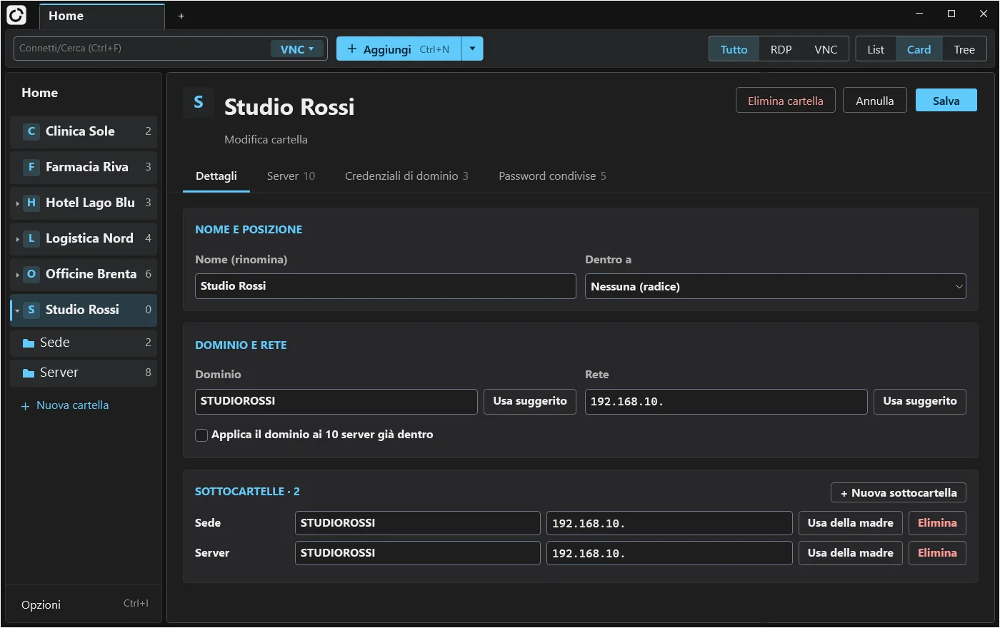
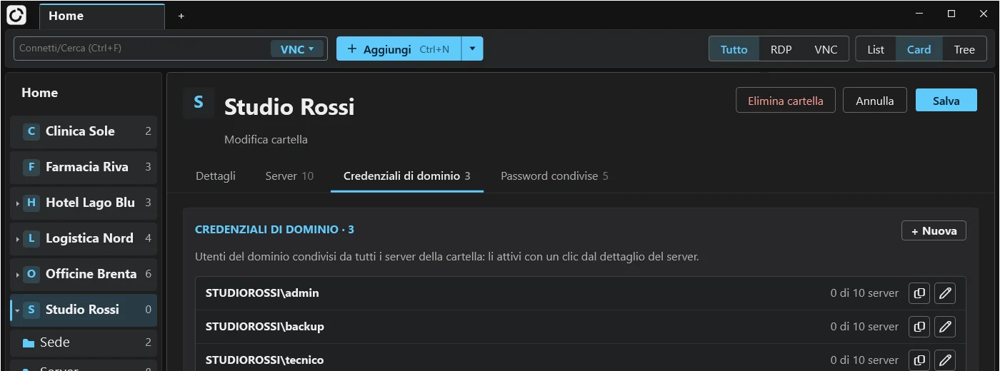
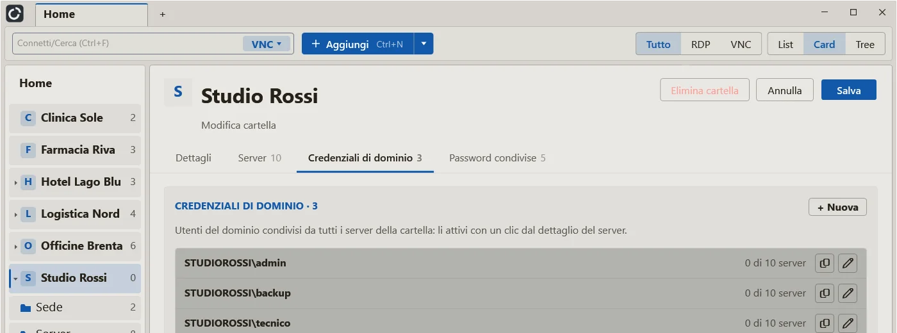
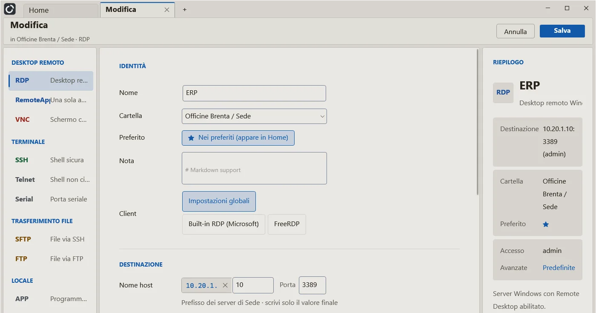
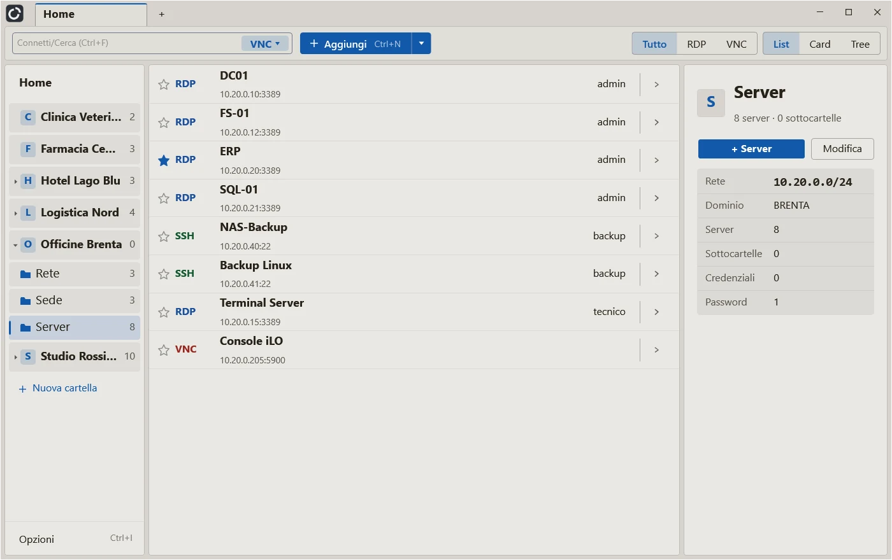
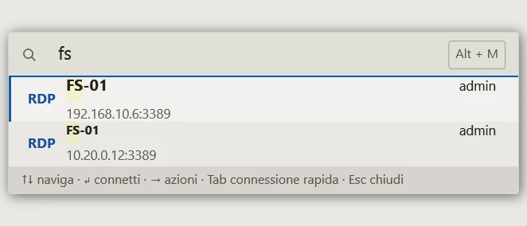
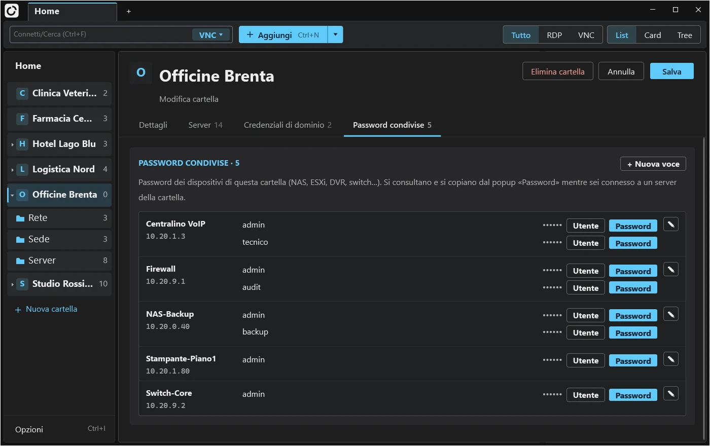
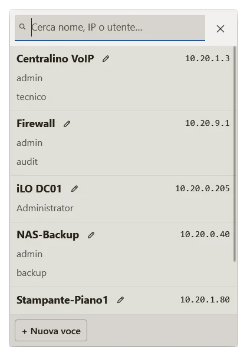
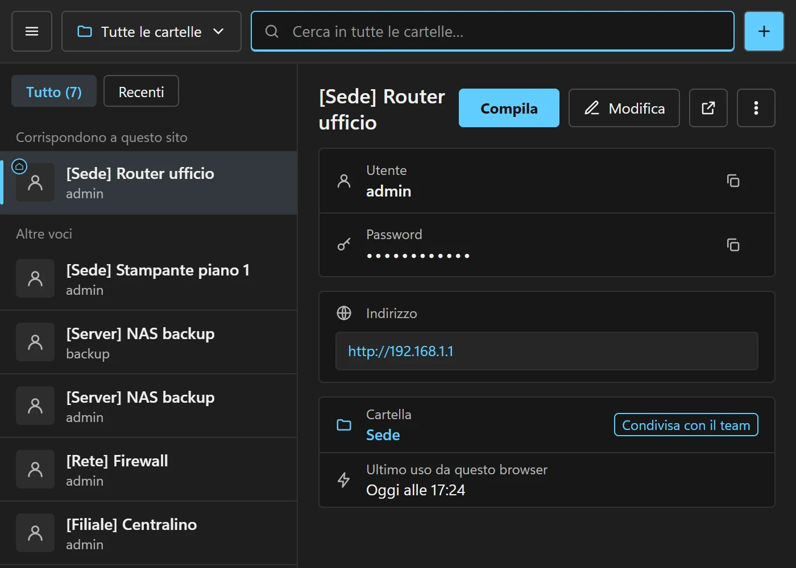
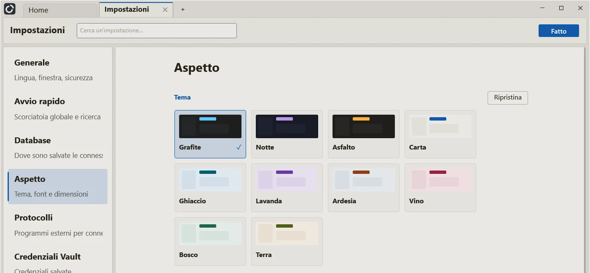

- Lemora
- Prodotto
Il programma, per chi assiste molti clienti
Le funzioni del client per Windows, una per sezione, con lo stato di ognuna. Quello che serve solo ai team è nella pagina Per aziende.
- Versione
- 1.3.1.11127
- Sistema
- Windows 10 2004+ · 11 · 64 bit
- Lingue
- italiano · inglese
- Licenza
- GPL-3.0
Un cliente, una cartella
La cartella tiene dominio, rete e credenziali. Le connessioni e le sottocartelle li ereditano: con la rete 192.168.10. l'indirizzo di un server si scrive solo 5.


- 1Dominio
- 2Rete
- 3Anche ai server già dentro
- 4Sottocartelle che ereditano
Credenziali di dominio della cartella
Gli utenti del dominio del cliente (BRENTA\admin, BRENTA\tecnico) si salvano una volta nella cartella e valgono per tutti i suoi server: dal dettaglio di un server si attivano con un clic.
Il conteggio accanto a ogni utente dice su quanti server della cartella è attiva.


Prova: cosa ricevono le connessioni
Cartella Officine Brenta › Server
| Connessione | Scritto | Indirizzo | Accesso |
|---|---|---|---|
| FS-01 | 12 | 10.20.0.12 | BRENTA\admin |
| DC01 | 10 | 10.20.0.10 | BRENTA\admin |
| SQL-01 | 21 | 10.20.0.21 | BRENTA\admin |
| VPN-Filiale | 172.16.4.9 | 172.16.4.9 | utente suo |
L'ultima riga ha un indirizzo completo e un utente proprio: la cartella non li tocca.


Ricerca rapida, Alt+M
Si apre sopra qualsiasi programma e cerca tra le connessioni di tutti i clienti per nome, indirizzo e utente. Invio apre la sessione; Tab passa alla connessione rapida verso un indirizzo non salvato.
La home mostra cronologia, preferiti e connessioni usate di recente. I tag (#stampanti, #vpn) filtrano tra tutti i clienti.




Protocolli
Ogni sessione è una scheda. Se l'indirizzo principale non risponde, Lemora prova in ordine gli indirizzi alternativi della connessione.
| Protocollo | Motore | Dettagli | Stato |
|---|---|---|---|
| RDP | FreeRDP 3 incluso nel file, oppure il client di Windows | RemoteApp, gateway, dischi, stampanti, smart card, audio, più monitor. Il certificato di ogni PC viene ricordato. | pronto |
| VNC | Visore proprio, nessun programma esterno | Codifiche ZRLE, Tight, Hextile, RRE, CopyRect. Qualità Auto, Bassa, Alta, cambiabile a sessione aperta. Appunti di testo. | pronto |
| File su VNC | Protocollo di TightVNC 2.x | Navigatore del disco remoto: scarica, carica, rinomina, cancella, con gestione dei conflitti. | pronto |
| SSH | KiTTY, PuTTY o Windows Terminal dentro la scheda | Terminale integrato a scelta: temi, ricerca nell'output, vista divisa. | pronto |
| Telnet, seriale | KiTTY o PuTTY dentro la scheda | Porta COM per switch e apparati di rete. | pronto |
| SFTP, FTP | Gestore a due pannelli | WinSCP esterno, se preferito. | pronto |
| Programmi esterni | Qualsiasi eseguibile | Indirizzo, utente e password passati come parametri. | pronto |
VNC su linee lente
Con TightVNC la prima schermata passa da circa 14,7 MB a 1,4 MB grazie al decoder Tight scritto per Lemora. In qualità Auto si parte a 16 bit e la qualità sale o scende con la banda.
File .mora
Una connessione si esporta in un file .mora; il doppio clic la apre. Il file non contiene password.
admin@fw-brenta:~$ show interface wan1 wan1 up 82.91.14.6/29 1000full admin@fw-brenta:~$ show vpn ipsec sa sede-filiale established rx 1.2 GB tx 0.9 GB admin@fw-brenta:~$
Password dei dispositivi, accanto alla sessione
NAS, switch, stampanti, firewall, centralini: un elenco per cartella, separato dalle credenziali delle connessioni. Durante una sessione RDP o VNC si apre di lato con Ctrl+Alt+P.




- 1Elenco della cartella
- 2Linguetta nella sessione
- Ereditarietà
- La linguetta mostra i dispositivi della cartella della connessione e di tutte quelle sopra: la rete del cliente compare anche dentro "Sede" e "Server".
- Più accessi per dispositivo
- Utente amministratore, utente di servizio, PIN del pannello: più coppie sulla stessa voce.
- Copia
- Utente, password o indirizzo con un clic. Verifiche e appunti a tempo: Sicurezza, S.3.
- Connessioni rapide
- La linguetta c'è anche verso un indirizzo non salvato, con le voci della cartella scelta.
Estensione per i pannelli web
Lemora Web Extension, per Firefox. Sulla pagina di accesso di un router o di un NAS propone le voci di quel dispositivo e compila al clic. La installa Lemora: senza il programma sullo stesso PC non fa nulla.

- Compila
- Al clic sull'icona nel campo o nel riquadro. Mai da sola.
- Salva da 1.0.3
- Dopo un accesso nuovo propone di salvarlo, solo se nella barra c'è un indirizzo IP. Sui siti con un nome di dominio non propone nulla.
- Cartella
- Ogni voce salvata finisce in una cartella scelta al momento.
- Browser
- Firefox, firmata da Mozilla, versione 1.0.9. La installa Lemora dalle impostazioni.
Lemora · 192.168.1.1
Prova · icona di Lemora nel campo per compilare; oppure scrivi utente e password a mano e premi Accedi, con l'IP e con il dominio.
Schede, finestre e tastiera
- Schede staccabili
- Una scheda trascinata fuori diventa una finestra; trascinata dentro torna scheda. Due sessioni si affiancano nella vista divisa.
- Scorciatoie da browser
- Ctrl+Tab, Ctrl+W, Ctrl+T, F11 funzionano anche con una sessione RDP o VNC in primo piano.
- Associazione tasti
- Per RDP e VNC si sceglie quali combinazioni (Win, Alt+Tab…) vanno al PC remoto e quali restano locali, con eccezioni per singola connessione. Ctrl+Alt+Canc resta locale: lo impone Windows.
- Sessioni in background
- Con "Riduci nel vassoio", chiudere la finestra lascia aperte le sessioni.
Claude dentro le sessioni RDP e VNC
Lemora contiene un server MCP locale (il protocollo con cui Claude usa programmi esterni). Claude vede lo schermo della sessione, legge il testo, clicca, scrive e attende, come un tecnico davanti al PC.
- Trovare
- Cercare connessioni, cartelle e dettagli; verificare se un PC risponde.
- Vedere
- Schermata con gli elementi numerati, elenco dei controlli, testo letto con l'OCR di Windows.
- Agire
- Clic, scrittura, tasti, scorrimento, trascinamento, attesa che qualcosa cambi.
- Scambiare
- Incollare testi lunghi, leggere gli appunti, mandare e prendere file con conferma.
Prova · Claude con PC-Reception
- File
invia_fileeprendi_filepassano dagli appunti RDP o dal protocollo TightVNC, fino a 500 MB per invio.
Come Claude resta sotto il controllo dell'utente: Sicurezza, S.6
Importazione
| Da | Formato | Note |
|---|---|---|
| mRemoteNG | CSV esportato | Cartelle e connessioni. |
| Desktop remoto di Windows | File .rdp | Con le credenziali che Windows ha salvato per quel PC. |
| 1Remote, Lemora | JSON o database .db | Anche da un'altra installazione. |
Controlli sui file importati: Sicurezza, S.4
Temi e requisiti
Dieci temi: Grafite, Notte e Asfalto scuri; Carta, Ghiaccio, Lavanda, Ardesia, Vino, Bosco e Terra chiari. L'estensione segue il tema del programma.


Tema Grafite · colori calcolati con le stesse regole del programma, su una finestra in miniatura.
- Componenti
- .NET e FreeRDP inclusi nel file; WebView2 per il terminale integrato (già presente in Windows 11)
- Lingue
- Italiano e inglese complete; le altre dodici ereditate da 1Remote non hanno le funzioni nuove
- Avvio
- Finestra subito visibile, dati caricati dopo; compilazione ReadyToRun
File, impronta e modi di installazione: Scarica
Con un server Teams
Le voci del server compaiono nelle stesse cartelle delle connessioni del PC, con la nuvola accanto. Il permesso del PC decide cosa si può fare su quelle voci.
- Sola lettura
- Le voci si aprono e si copiano. Modifica, Duplica, Elimina e Rinomina non compaiono; creare una voce sul server viene rifiutato con un messaggio.
- Richieste
- L'editor propone "Manda al server come richiesta". La voce resta com'è fino all'approvazione; quella nuova compare subito con l'orologio. Un rifiuto arriva con la nota dell'amministratore.
- Server irraggiungibile
- La richiesta resta in coda sul PC, con l'orologio, e parte appena il server risponde.
- Ritirare o correggere
- Una richiesta ancora in attesa si può aggiornare o ritirare; l'amministratore vede sempre l'ultima versione.
Prova · PC-GIULIA collegato a Teams · cartella Officine Brenta
- RDPFS-01
10.20.0.12☁ - RDPDC01
10.20.0.10☁◷
I messaggi sono quelli del programma. La parte dell'amministratore: Per aziende, A.3.